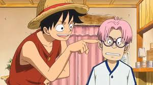
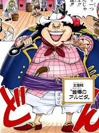
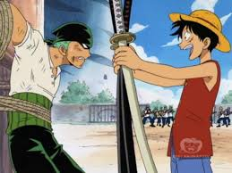

ONE PIECE
La historia comienza con un barril flotando en el mar. A bordo del crucero Lady Mary, dos marineros lo descubren mientras en el salón principal se celebra un baile de pasajeros adinerados. Uno de ellos invita a una joven chica a bailar. Cuando los marineros intentan recuperar el barril, avistan al barco pirata Miss Love Duck, que abre fuego contra el crucero. El barril rueda hasta la cocina mientras los pasajeros entran en pánico por el abordaje de los Piratas de Alvida. Durante el ataque, Koby, un joven esclavizado por Alvida, encuentra el barril y decide llevárselo a su capitana. En el camino se topa con tres piratas de su tripulación, quienes intentan quedarse con él.

Al intentar abrirlo, del interior emerge Monkey D. Luffy, que derrota fácilmente a los piratas. Koby y Luffy conversan en la bodega, donde Luffy come manzanas de un cajón. Los piratas informan a Alvida de la presencia de un “monstruo” a bordo, sin saber que Nami aprovecha el caos para robar tesoros en el Miss Love Duck.Luffy le cuenta a Koby que su bote fue destruido por un remolino, razón por la que estaba dentro del barril. Koby, a su vez, le confiesa cómo terminó bajo las órdenes de Alvida y su deseo de unirse a la Marina. Luffy revela su sueño: convertirse en el Rey de los Piratas, lo que sorprende a Koby.

Alvida irrumpe en la bodega y confunde a Luffy con un cazarrecompensas. Luffy la insulta llamándola “señora gorda”, lo que la enfurece. Cuando intenta atacar a Koby, Luffy lo protege y ambos saltan a cubierta, donde Luffy derrota a los piratas con sus poderes de goma, obtenidos tras comer la fruta Gomu Gomu. Inspirado por Luffy, Koby enfrenta a Alvida y la llama “vieja bruja”. Luffy la derrota de un golpe y obliga a su tripulación a entregarles un barco. Mientras navegan, Koby le habla a Luffy sobre el cazador de piratas Roronoa Zoro, capturado por la Marina, y Luffy decide reclutarlo como su primer tripulante.
